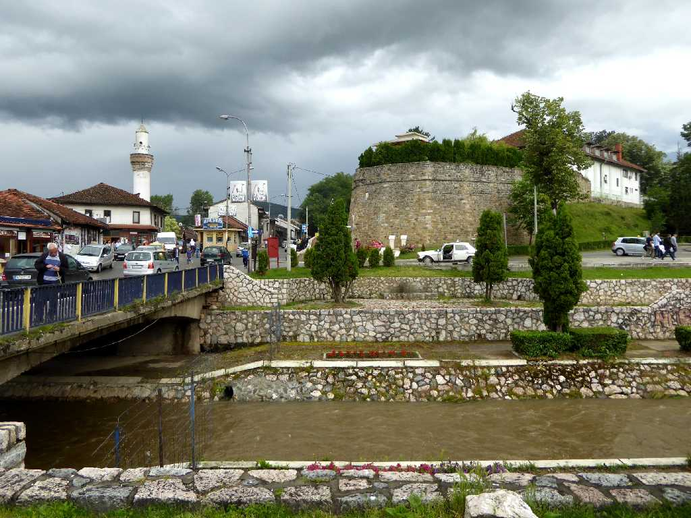
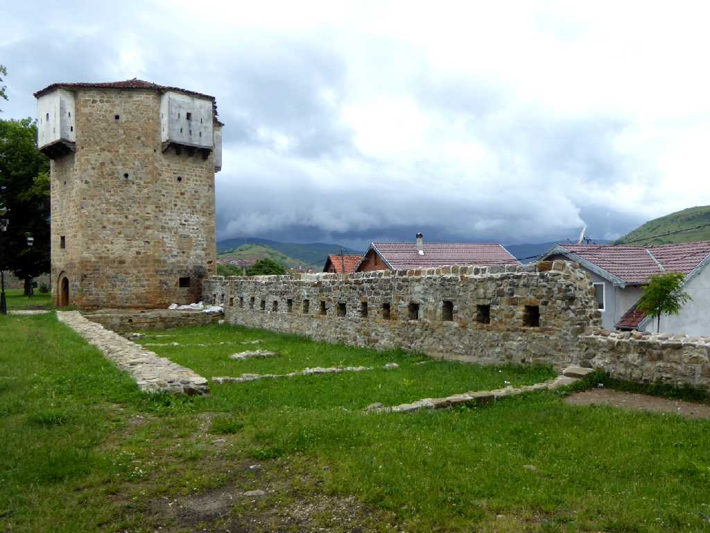
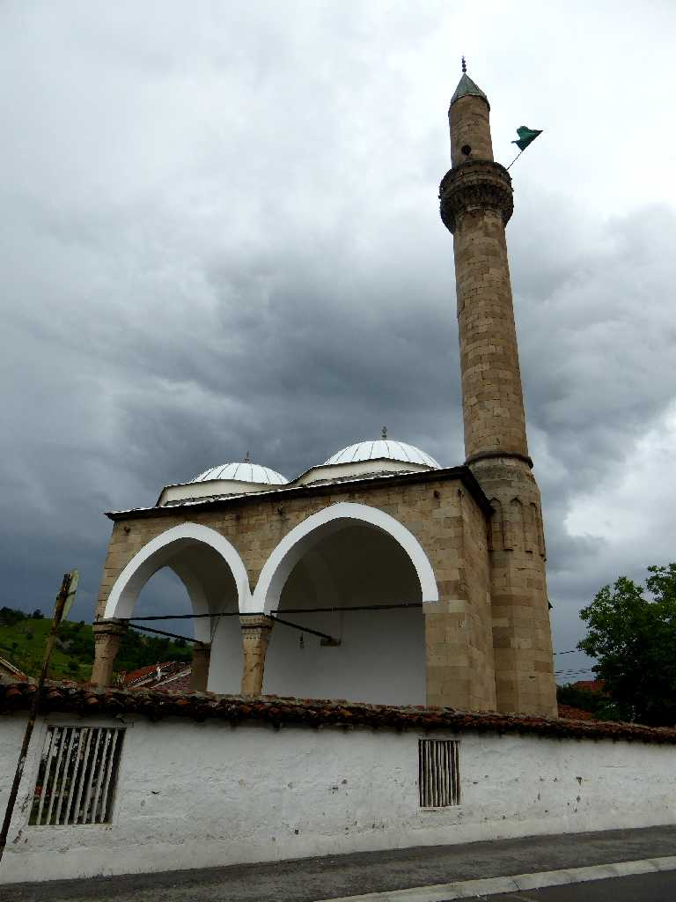
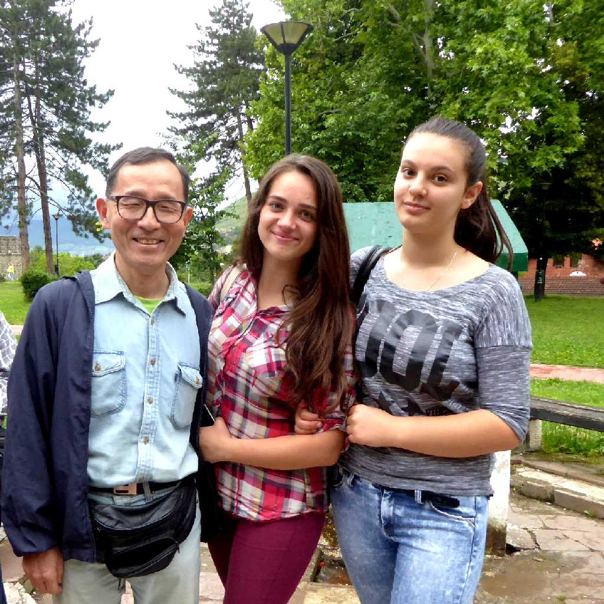

Ahmed Vojvoda Džamija Novi Pazar Bedem Gradskom Parku
新しい(Novi)市場(Pazar)を意味する ノビパザル旧市街

Bedem Gradskom Parku
都市公園の要塞の城壁跡

Altun Alem Džamija
１６世紀に創られたバルカン最大と云われているモスク

June 13 2016 Gradskom Parku